Brainframe:
a tool for visualizing per-voxel or per-region data, as well as connectome data, in a 3D surface representation of a brain. This function has been tested for and works using mice and human brain atlases, but may well work with other species' brains.
Contents
- Syntax & Basic Use:
- Fields of input_struct:
- Use-Case Examples:
- Resetting the colormap and region_groups for visualization:
- Increasing the density of points relative to the prior visualization:
- Using non-centered pointclouds, rather than centred pointclouds:
- Using spheres rather than pointclouds for per-region visualizations:
- Only visualizing certain regions:
- Visualizing connectivity for the above selected regions:
- Making per-voxel visualizations:
- Visualizing data in humans:
- Visualizing human connectivity data:
Syntax & Basic Use:
The below creates a 3D human brain rendering following the fields of input_struct. Use brainfram_inputs_human, with fieldnames specified as name-value pairs, to create your own input_struct. No inputs yields the default human input_struct.
matpath = cd; %Change this to alter the path you load from
input_struct = brainframe_inputs_human(matpath);
brainframe(input_struct)
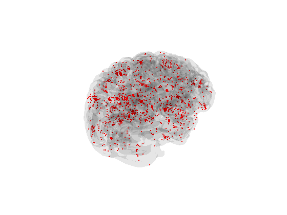 The below creates a 3D mouse brain rendering following the fields of input_struct. Use brainfram_inputs_mouse, with fieldnames specified as name-value pairs, to create your own input_struct. No inputs yields the default mouse input_struct.
matpath = cd; %Change this to alter the path you load from
input_struct = brainframe_inputs_mouse(matpath);
brainframe(input_struct)
view([-1 0 0]);
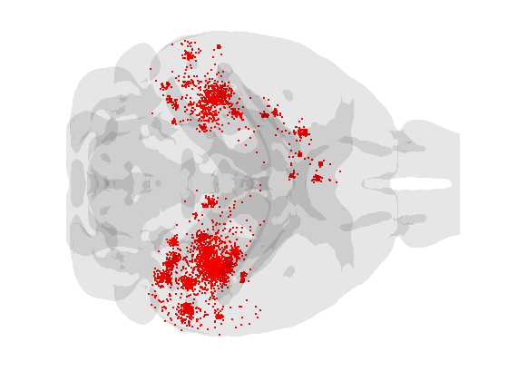 Fields of input_struct can also be modified directly as below. Note the increase in pointcloud density relative to the above image after xfac is changed.
input_struct.xfac = 5; brainframe(input_struct) view([-1 0 0]);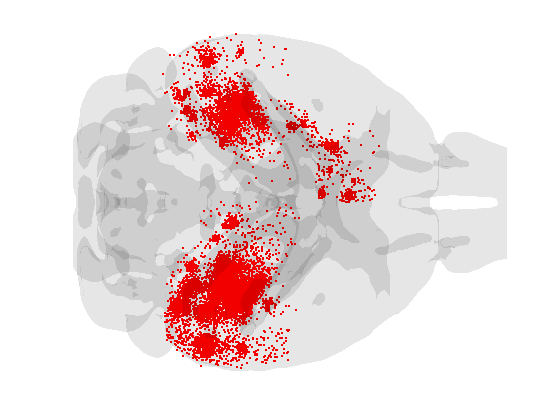
Fields of input_struct:
voxUreg: Binary flag for per-voxel or per-region visualizations. Human & mouse defaults are both 0.
brain_atlas: 3D atlas with numeric regional IDs per-voxel. Human default is the 86-region Desikan & mouse default is the 213-region AIBS CCF. bgcolor: Image background color. Options are 'k', 'w', 'other' (which produces gray). Human & mouse defaults are 'k'.
savenclose: Binary flag indicating whether the user wants images of on axis views saved and the GUI to close (value = 1), or whether the user wants to open the GUI (value = 0). Mouse and human defaults are both 0.
img_labels: Your desired filename, as a string, if savenclose == 1. Default is 'yourfilename'.
img_format: Desired image file format as a string, if savenclose == 1. Default is 'png'.
data: Desired data input, specified as either a vector of per-voxel or per-region entries. Per voxel data can also be specified as a 3D matrix. Default for humans is per-region tau PET pathology data and the default for mice if per-region sem-quantitative tau IHC/IF data.
nbin: Number of bins per voxel data is divided into for colormap visualization. This field only applies to per-voxel data. Default is 1.
nreg: Number of regions to go through in specified atlas. This must be a number equal to the number of unique region IDs in brain_atlas. This field is only relevant for per-region data. Default is 86 for humans and 426 for mice.
region_groups: This is a vector specifying the group each region is part of for colormap purposes. This vector must be the of length nreg. Default is an 86-element vector of 1s for humans and a 426 element vector of 1s for mice.
sphere: Binary flag specifying whether or not to visualize spheres at region centers. This field is relevant only for per-region visualizations. Default is 0.
sphere_npts: This field specifies how many points are used to construct the spheres, relative to each sphere's radius. Default is 100.
centered: This is a two element vector, with fields specifying different elements of pointcloud functionality. The first element is a binary flag specifying whether or not the pointclouds are centered at each regional centroid. The second element denotes the degree of centering, with higher numbers resulting in more centering. Default is [1 2].
cmap: The colormap used in either per-region or per-voxel visualizations. For per-region visualizations, this must be a number of unique region_groups X 3 matrix of RGB vectors per row. For per-voxel visualizations, this must be an nbin X 3 matrix of RGB vectors per row. Default is [1 0 0].
xfac: Universal multiplier for sphere radius sizes or point cloud size and density for both per-region and per-voxel visulizations. Default = 1.
pointsize: Specifies the size of points in the visualizations. Default is 50 for humans and 10 for mice.
iscon: Binary flag specifying whether to visualize connectivity. Default is 0.
conmat: Connectivity matrix that is nreg X nreg. Default is 86 X 86 Desikan connectome for humans and the 426 X 426 AIBS connectome for mice.
con_rescale: Universal connectivity multiplier that scales the number of and spread of the ellipses plotted to visually simulate neural connectivity. Ellipses are visualized per region pairs in a number proportional to the C(i,j) entry of the connectome. The default for humans is 1 and the default for mice is 0.01.
con_width: Specifies the line width of each ellipse visualized. The default is 0.01.
con_regiongroups: A vector that specifies region groups as integers for the connectivity visualization colormap. This field works analogously to region_groups. Defaults are the same as for region_groups.
con_cmap: The colormap for connectivity visualizations. This field works analogously to cmap. The default is [0 0.447 0.741].
con_arch: This field specifies the degree of curvature in the ellipses. Default is 0.5.
conarrow_WL: Specifies the width and length of the cone arrows used to indicate direction of connection between each region pair. Defaults are [1.5 2.5] in humans and [0.5 0.8] in mice.
Use-Case Examples:
The below examples are to illustrate various brainframe use cases.
Resetting the colormap and region_groups for visualization:
Visualizing pathology in mice using major region groups from the Raj Lab, to illustrate use of region_groups and cmap input_struct fields to create colormapped per-region visualizations.
reggroups = zeros(213,1); %Chunk of code to define region_groups amy = 1:11; cer = 12:23; sub = 24:26; hip = 27:37; hyp = 38:57; ncx = 58:95; med = 96:120; mid = 121:141; olf = 142:149; pal = 150:157; pon = 158:170; str = 171:178; tha = 179:213; reggroups(amy) = 1; reggroups(cer) = 2; reggroups(sub) = 3; reggroups(hip) = 4; reggroups(hyp) = 5; reggroups(ncx) = 6; reggroups(med) = 7; reggroups(mid) = 8; reggroups(olf) = 9; reggroups(pal) = 10; reggroups(pon) = 11; reggroups(str) = 12; reggroups(tha) = 13; reggroups = [reggroups;reggroups]; cmap = hsv(length(unique(reggroups))); %Setting colormap matpath = cd; input_struct = brainframe_inputs_mouse(matpath,'region_groups',... reggroups,'cmap',cmap); brainframe(input_struct) view([-1 0 0]);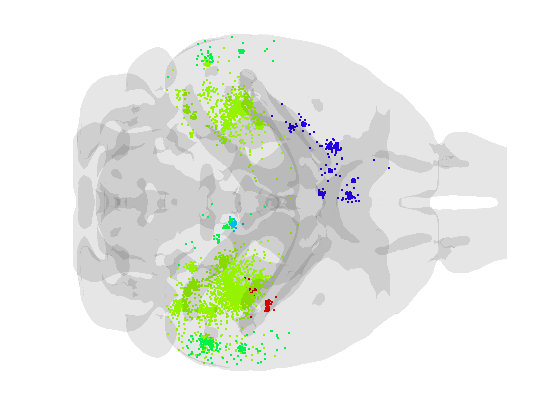
Increasing the density of points relative to the prior visualization:
input_struct = brainframe_inputs_mouse(matpath,'region_groups',... reggroups,'cmap',cmap,'xfac',5); brainframe(input_struct) view([-1 0 0]);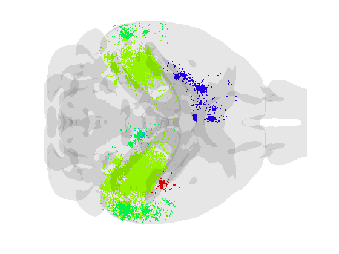
Using non-centered pointclouds, rather than centred pointclouds:
input_struct = brainframe_inputs_mouse(matpath,'region_groups',... reggroups,'cmap',cmap,'xfac',5,'centered',[0 1]); brainframe(input_struct) view([-1 0 0]);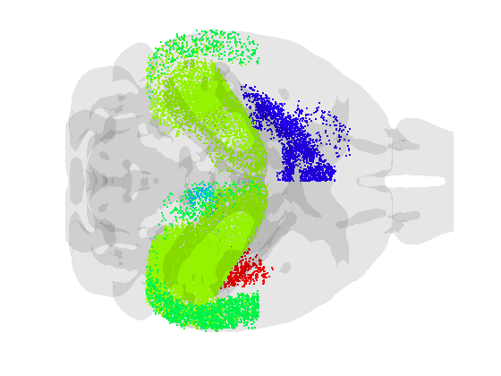
Using spheres rather than pointclouds for per-region visualizations:
Note that xfac for spheres is often quite different than pointclouds
input_struct = brainframe_inputs_mouse(matpath,'region_groups',... reggroups,'cmap',cmap,'xfac',0.1,'sphere',1); brainframe(input_struct) view([-1 0 0]);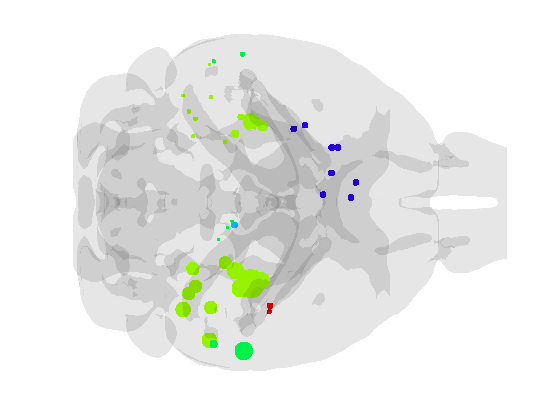
Only visualizing certain regions:
Use case here shows uniform data only for the hippocampus in the RH.
datavec = zeros(426,1); datavec(27:37) = 1; input_struct = brainframe_inputs_mouse(matpath,'region_groups',... reggroups,'cmap',cmap,'xfac',0.075,'sphere',1,'data',datavec); brainframe(input_struct) view([-1 0 0]);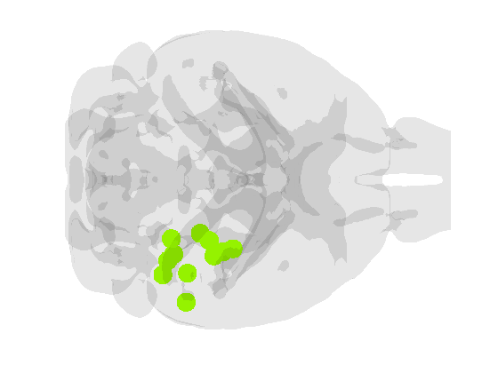
Visualizing connectivity for the above selected regions:
Visualizing all connections at once is not recommended. For this use case direct modification of input_struct is likely easiest.
input_struct.iscon = 1; %Turn on connectivity visualization binary flag input_struct.conmat = input_struct.conmat - ... diag(diag(input_struct.conmat)); %zeroing out the diagonal input_struct.conmat(1:26,:) = 0; %zeroing out all non-hippocampal data input_struct.conmat(27:37,[1:26 38:end]) = 0; input_struct.conmat(38:end,:) = 0; input_struct.conmat(... %This line thresholds conmat, we recommend this input_struct.conmat<0.5*mean(nonzeros(input_struct.conmat))) = 0; brainframe(input_struct); view([-1 0 0]);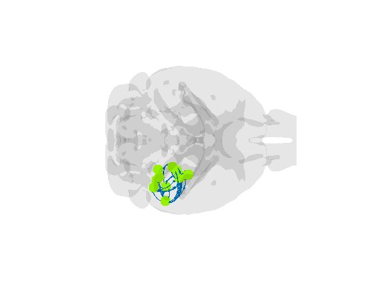
Making per-voxel visualizations:
The example here is an estimated distribution of L4 neurons in the mouse brain, with bins and colormaps used to denote density per voxel in addition to pointcloud density. Note voxUreg is now 0. Also note that data must be co-registered to your brain atlas, as shown below.
matpath = cd; load([matpath filesep 'PerVox_ExampleData.mat'],'pervoxdata'); %Ex. data datinput = pervoxdata.Pvalb; %Pvalb+ GABAergic interneurons datinput = imresize3(datinput,[133 81 115]); %Co-registering data to CCF datinput(datinput<0) = 0; %Getting rid of negative artifacts input_struct = brainframe_inputs_mouse(matpath,'voxUreg',0,'data',... datinput,'nbin',5,'cmap',autumn(5)); %Note size(cmap,1)==nbin brainframe(input_struct); view([-1 0 0]);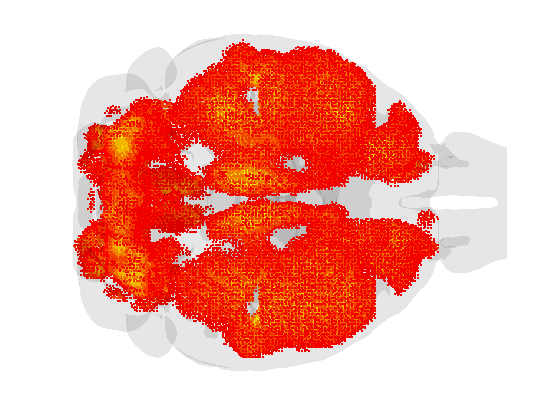
Visualizing data in humans:
Using regional pathology as an example, with a general mutlipler of 5. Note the syntax is the same as with mice, with the exception that a different input_struct generating function is called.
matpath = cd; load([matpath filesep 'brainframe_defaultHuman_datinput.mat'],'testdata'); input_struct = brainframe_inputs_human(matpath,'xfac',1,'data',testdata); brainframe(input_struct)
Visualizing human connectivity data:
Here we visualize connections only above a threshold, with a sphere of uniform size at the regional centroid. Note that the 'data' field is also reset to only create spheres in thoseregions participating in above threshold connections.
input_struct.sphere = 1; %Setting binary flag for spheres to 1 input_struct.iscon = 1; %Turn on connectivity visualization binary flag input_struct.conmat = input_struct.conmat - ... diag(diag(input_struct.conmat)); %zeroing out the diagonal input_struct.conmat(input_struct.conmat<50) = 0; %setting threshold for visualization [fROI,~] = find(input_struct.conmat); fROI = unique(fROI); %These lines only work for symmetric matrices input_struct.data = zeros(input_struct.nreg,1); input_struct.data(fROI) = 1; %Only render spheres above threshold regions input_struct.xfac = 0.5; %Remember sphere rescaling very different brainframe(input_struct);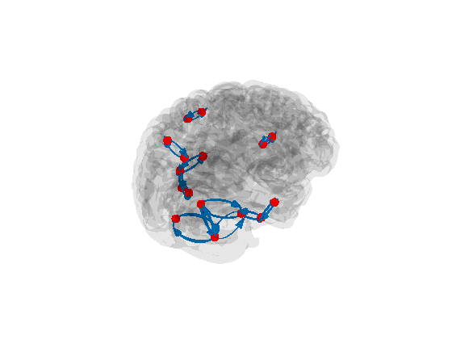